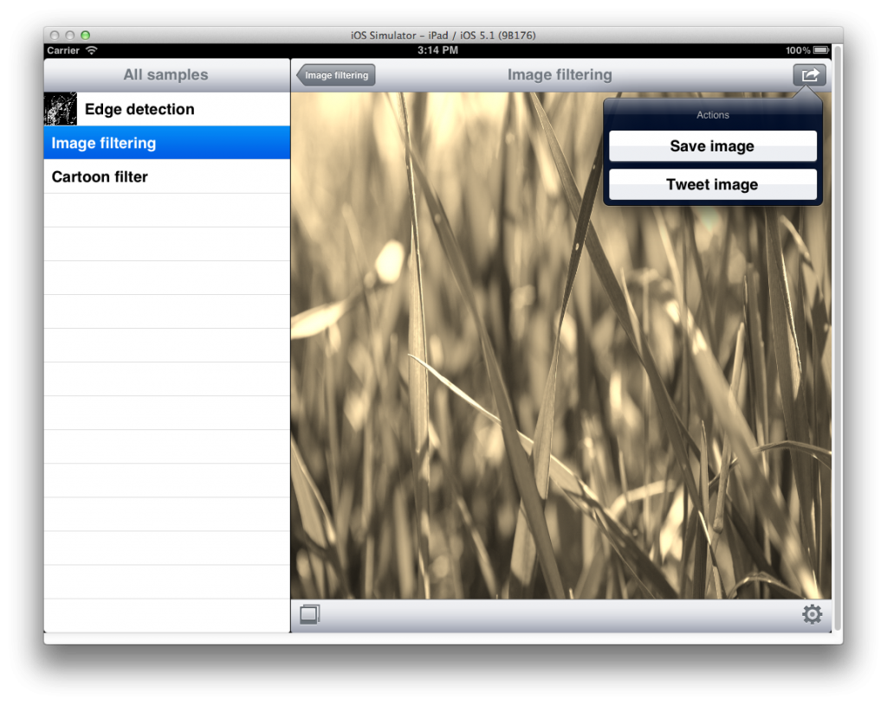

OpenCV Tutorial - Part 6
[toc] Hi folks! I’m glad to publish a sixth part of the OpenCV Tutorial cycle. In this post I will describe how to implement interesting non-photorealistic effect that makes image looks like a cartoon. It has numerous names: cartoon filter or simply “toon” also it known as rotoscoping. In addition we will refactor application interface and add tweeting feature to share your results across the web. According to the roadmap I promised to put the video recording module too, but due to lack of free time I decided to put it on hold for now. To compensate this in this part I will demonstrate how to get Sepia effect using simple matrix multiplication. Don’t afraid, video recording will be added, but later. I think after part 9, when most of the samples will be optimized using ARM NEON I will add this feature.
Interface improvements
I will never get tired to repeat that user experience is a top 1 priority for mobile apps. As a developer you have to think about users in the first order. Will the user be satisfied with your app or deletes it after using for 30 seconds – this depends only from you. I was unsatisfied with previous interface. Especially with those unintuitive icons and text labels. Many thanks for free icon packs where I got new toolbar icons for my app. With new interface I tried to make image and video views looks similar. The left toolbar button for image view responsible for selecting a photo; in the video mode I put a button that switches between front and back cameras to this position. The central place on a toolbar is taken by “options” button that shows the options for selected sample view (iPhone interface). The right button is a special action button that presents a list of action you can do: save image to album, tweet it or do anything else. Let’s take a look how our interface did evolved:
iPhone interface improvements

iPad interface improvements
 To eliminate duplicate code for two processing modes (image and video) we introduce a base class to store common data for derived views:
typedef void (^TweetImageCompletionHandler)();
typedef void (^SaveImageCompletionHandler)();
#define kSaveImageActionTitle @"Save image"
#define kComposeTweetWithImage @"Tweet image"
@interface BaseSampleViewController : UIViewController
@property (readonly) SampleBase * currentSample;
- (void) configureView;
- (void) setSample:(SampleBase*) sample;
- (void) tweetImage:(UIImage*) image withCompletionHandler: (TweetImageCompletionHandler) handler;
- (void) saveImage:(UIImage*) image withCompletionHandler: (SaveImageCompletionHandler) handler;
@end
We will consider implementation of the tweetImage and saveImage function a little bit later. BaseSampleViewController has a public readonly property to current sample, and a special setSample function to change it. When a new sample is assigned it calls configureView to update the view title and perform other actions.
Action sheet – easy way to perform typical actions
You could notice that I’ve removed “Save” button from the toolbar. The main reason for this – I wanted to avoid adding “Tweet”, “Share”, “Save and email” buttons. All these actions should be grouped somewhere else. The ideal solution is to use UIActionSheet control that will present available actions. Using this class is very easy: First, you need to instantiate action sheet with a list of available actions. For our case it will looks like this:
self.actionSheet = [[UIActionSheet alloc] initWithtitle = @"Actions"
delegate:self
cancelButtontitle = @"Cancel"
destructiveButtontitle = nil
otherButtonTitles:kSaveImageActionTitle,
kComposeTweetWithImage, nil];
String constants kSaveImageActionTitle and kComposeTweetWithImage has corresponding values “Save image” and “Tweet image”. The key step when we instantiate action sheet - to specify a delegate that will handle interaction with this action sheet. To implement UIActionSheetDelegate protocol you must provide implementation at least for actionSheet:clickedButtonAtIndex: method:
- (void)actionSheet:(UIActionSheet *)senderSheet clickedButtonAtIndex:(NSInteger)buttonIndex
{
NSString * title = [senderSheet buttonTitleAtIndex:buttonIndex];
if (title == kSaveImageActionTitle)
{
[self saveImage:self.imageView.image withCompletionHandler:nil];
}
else if (title == kComposeTweetWithImage)
{
[self tweetImage:self.imageView.image withCompletionHandler:nil];
}
}
Let’s imagine we are running a video processing and decide to save image. We press actions button on a toolbar then tap on “Save image” button, but the video source continue generating new frames. Expected behavior in this case is to suspend processing. To do this we pause video source when action sheet is shown and resume when it dismissed. UIActionSheetDelegate provides a method willPresentActionSheet called before action sheet will appear:
- (void)willPresentActionSheet:(UIActionSheet *)actionSheet; // before animation and showing view
{
[videoSource stopRunning];
}
So we pause video source when action sheet appears. To resume processing frames we will use actionSheet:clickedButtonAtIndex method. If clicked button index does not corresponds to known action we simply resume video source because action sheet will be dismissed soon. But if user ask to tweet or save image, we invoke corresponding method and resume video source only after this action is complete. Since tweeting involves presenting tweet compose view it’s reasonable to pause all processing and continue when the all work is done.
- (void)actionSheet:(UIActionSheet *)senderSheet clickedButtonAtIndex:(NSInteger)buttonIndex
{
NSString * title = [senderSheet buttonTitleAtIndex:buttonIndex];
if (title == kSaveImageActionTitle)
{
UIImage * image = [UIImage imageWithMat:outputFrame.clone() andDeviceOrientation:[[UIDevice currentDevice] orientation]];
[self saveImage:image withCompletionHandler: ^{ [videoSource startRunning]; }];
}
else if (title == kComposeTweetWithImage)
{
UIImage * image = [UIImage imageWithMat:outputFrame.clone() andDeviceOrientation:[[UIDevice currentDevice] orientation]];
[self tweetImage:image withCompletionHandler:^{ [videoSource startRunning]; }];
}
else
{
[videoSource startRunning];
}
}